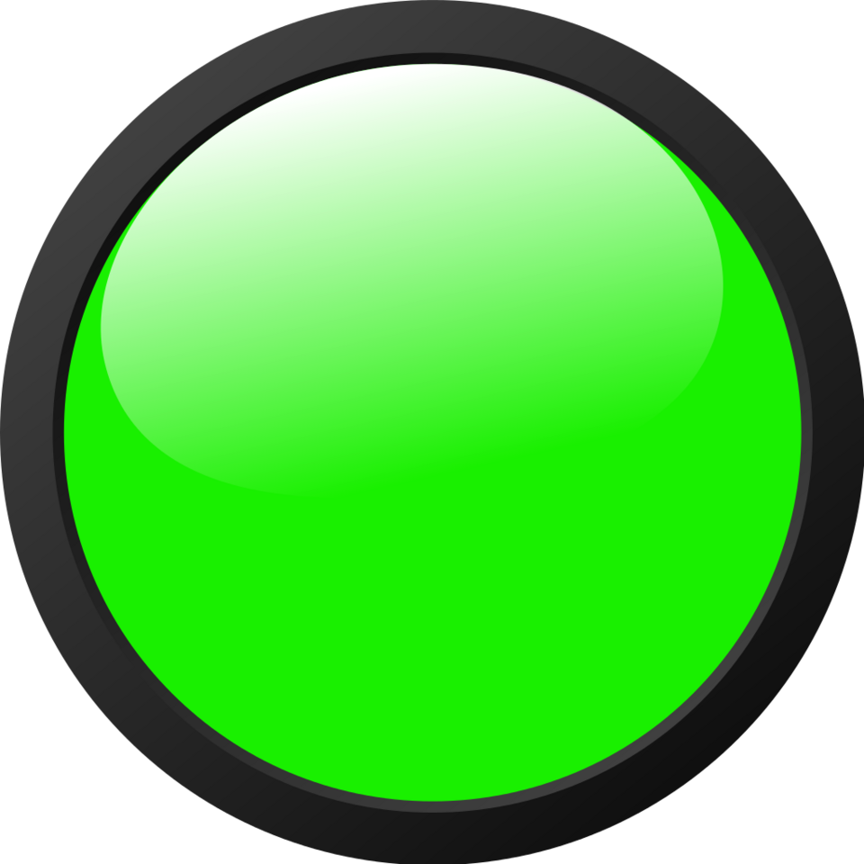

Travel Map
Cargo
dernière position de l'avion

point de passage de l'avion
Accueil
Planificateur de vol
Passager
cargo
//affichage map et pointer sur la map // décalage sidebar pour le barre de déffilement
 dernière position de l'avion
dernière position de l'avion
dernière position de l'avion
dernière position de l'avion